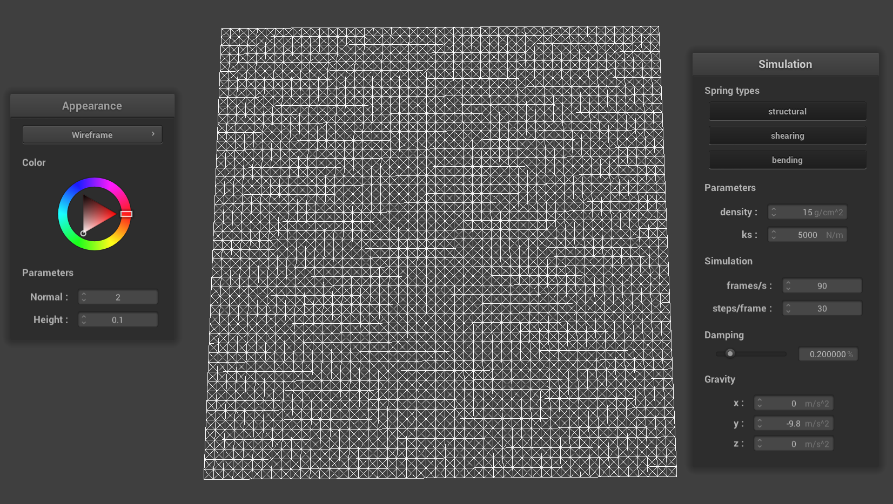
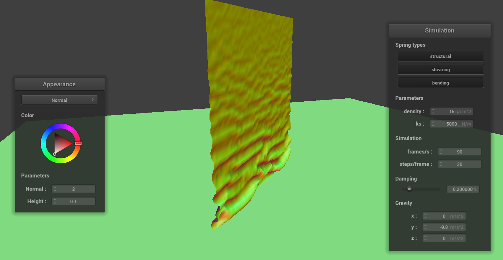
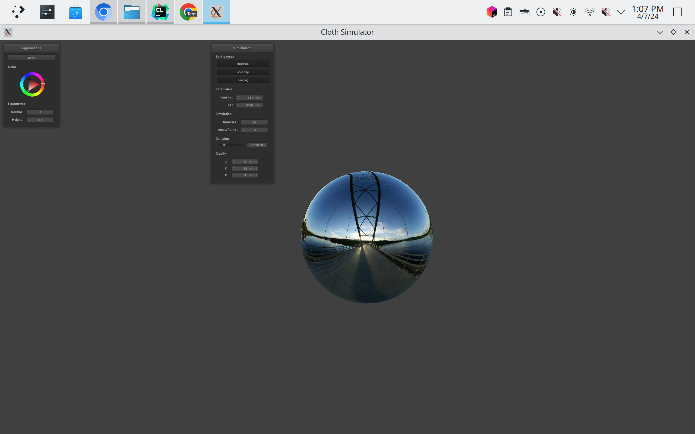

CS 184: Computer Graphics and Imaging, Spring 2024
Project 4: Cloth Simulator
Mark Nguyen, Xuanye Chen
Overview
In this homework, we implemented a cloth simulator using mass-spring systems and rendered the simulation result
using different shaders. In the simulation part, we learned how to build a mass-spring mesh and integrate the system
using some explicit numerical integration methods and we also observed the explosion of the cloth when the spring
constant is too high. We also learned to use the signed distance field to handle collisions with other objects and
spatial hashing to handle self-collisions. In the rendering part, we implemented different shaders to create various
lighting and material effects, which helps us to understand how the shaders work together to create the final
result, and also enables us to review the rendering models we learned in previous lectures.
Part 1: Masses and springs
Take some screenshots of scene/pinned2.json from a viewing angle where you can clearly see the cloth
wireframe
to show the structure of your point masses and springs.
|
Zoomed In
|

Initial configuration ($\text{ks} = 5,000$)
|
Zoomed Out
|
|
Show us what the wireframe looks like (1) without any shearing constraints,
(2) with only shearing constraints, and (3) with all constraints.
|
No shearing constraints
|
|
Only shearing constraints
|
|
All constraints
|
Part 2: Simulation via numerical integration
Experiment with some the parameters in the simulation.
To do so, pause the simulation at the start with P, modify the values of interest, and then resume by
pressing P again.
You can also restart the simulation at any time from the cloth's starting position by pressing R.
Describe the effects of changing the spring constant ks; how does the cloth behave from start
to rest with a very low ks?
A high ks?
The amount of force required to effect a spring seems to be based on the value of KS. A cloth from low ks seems
to be more loose as the cloth "vibrates" and flows more
frequently. This makes sense as a low spring constant means less force is required to stretch/compress the spring. A
cloth from high ks seems to be more stiff as it falls semi-uniformly all at once and
once it reaches the bottom, there is minimum movement.
What about for density?
Lower density makes the cloth more stiff/less reactive when falling down while high density makes the
cloth more wavy when falling down. When a cloth has a high density
that its weight is heavier. Meaning that when the cloth falls down and reaches the bottom, the spring between two
mass is pulled more since the bottom mass has a higher mass compared to a
lower density cloth. As a result, when the heavier cloth falls, there is this "ripple" effect. On the other hand,
when the lower density cloth falls, there is less of a push/pull between each spring
so the lower density cloth seems to fall more "nicely" and together.
What about for damping?
Low damping makes the cloth oscillate and swing more frequently. The cloth is quick and seems to be very
reactive to all of the forces. It takes a while for a very low
damping percentile for it to reach equilibrium as it is always oscillating. High damping makes the cloth slow and
oscillate a lot less. The cloth seems to fall in slow-motion in a sluggish fashion. It is quick to reach
equilibrium and doesn't have much movement
along the way.
For each of the above, observe any noticeable differences in the cloth compared to the default parameters
and show us some screenshots of those interesting differences and describe when they occur.
The force of gravity has a greater effect on Low KS vs high KS. This can be seen as the top of the cloth falls
lower on the low KS picture as opposed to the high KS image above as the cloth does not drop as much. This
occurs when the cloth completely falls and reaches
resting state.
Both of the low and high density iamges were captured at around the time each cloth reached resting position.
Interestingly, even though these cloths have different density,
they seem to fall at similar rates. A difference was that the low density one rests at a higher place as seen in
the image compared to the high density one where the cloth between the pins
fall lower. This makes sense since the higher denisty one is heavier and so gravity will have a greater impact
so the cloth should rest lower.
 Low Damping
Low Damping
|
High Damping
|
|
The higher the damping, the slower the cloth falls. The high damping image was taken a few seconds after start
time, and the cloth is still on its first oscillation falling down.
The lower the damping the faster and more sporadic the cloth falls. The high damping image was also taken a few
seconds after start time, but it has already completed its
first oscillation and is captured making its swing back up.
Show us a screenshot of your shaded cloth from scene/pinned4.json in its final resting state!
If you choose to use different parameters than the default ones, please list them.
Default parameters
Part 3: Handling collisions with other objects
Show us screenshots of your shaded cloth from scene/sphere.json in its final resting state
on the sphere using the default ks = 5000 as well as with ks = 500 and ks =
50000.
|
$\text{ks} = 500$
|
Initial configuration ($\text{ks} = 5,000$)
|
$\text{ks} = 50,000$
|
|
Describe the differences in the results.
As the value of KS decreases, the more the sphere is wrapped around by the cloth. There are also more small folds in
the cloth and it drops lower when at resting position.
The opposite can only be said about a high KS. As on the image with a KS of 50,000 there are bigger but less folds
on the cloth. Also the cloth does not wrap around the sphere
as tightly as the cloth did with a low KS value.
Show us a screenshot of your shaded cloth lying peacefully at rest on the plane.
If you haven't by now, feel free to express your colorful creativity with the cloth!
(You will need to complete the shaders portion first to show custom colors.)
Part 4: Handling self-collisions
Show us at least 3 screenshots that document how your cloth falls and folds on itself,
starting with an early, initial self-collision
and ending with the cloth at a more restful state (even if it is still slightly bouncy on the ground).
|

Self collision 1
|
Self collision 2
|
Self collision 3
|
|
Vary the density as well as ks
and describe with words and screenshots how they affect the behavior of the cloth as it falls on itself.
|
$\text{density} = 1$
|
$\text{density} = 50$
|
 $\text{ks} = 1,000$
$\text{ks} = 1,000$
|
$\text{ks} = 7,500$
|
As density increases, the heavier the cloth is. As a result high density leads to tighter folds and wrinkles in the
cloth as seen in the top-right image. The lower the density, the
larger the folds are with less wrinkles. Intuitively, this makes sense because the lower density cloth will
experience an decrease gravitational force, so the folds aren't close
as they are compared to the high density one.
As the value of KS increases, the folds on collusion are bigger but in less frequency. On the other hand, as the
value of KS decreases, there are more wrinkles in the cloth
and more fold on collisions in greater frequency. Intuitively, when a KS value is smaller, it takes less overall
force to impact the spring, hence the increase the wrinkles and
folds. Moreover, this explains why the greater KS cloth experiences less wrinkles and folds. However, it is also
worth noting that when the ks value is too high, the simulation
becomes unstable and the cloth starts to "explode", making it impossible for us to test more values.
Part 5: Cloth Sim
Explain in your own words what is a shader program and how vertex and fragment shaders work together to create
lighting and material effects.
A shader program is just like the normal programs that run on the CPU, but it runs on the GPU instead. They are
mainly used to instruct the GPU on how to process the graphics data, such as how to render them. Vertex shaders
and fragment shaders are the most common types of shaders. Vertex shaders are usually used to compute the position
of the primitives on the screen, which often requires some transformations, and it also bears the responsibility of
passing other vertex attributes to the fragment
shader. Fragment shaders are ran for each pixel that is drawn on the screen. It is used to compute the color of the
pixel. In the rendering pipeline, the data flow from the vertex shader to the fragment shader.
The attributes will be interpolated from the vertex shader and passed to the fragment shader. The fragment shader
will then
use these attributes and other uniform variables to compute the color of the pixel. In this way, if we can specify
the behaviour of the vertex and fragment shaders, we can create customized lighting and material effects.
Explain the Blinn-Phong shading model in your own words.
Show a screenshot of your Blinn-Phong shader outputting only the ambient component, a screen shot only
outputting the diffuse component, a screen shot only outputting the specular component, and one using the entire
Blinn-Phong model.
The Blinn-Phong shading model is a modification of the Phong shading model. It is composed of three components:
ambient, diffuse, and specular. For ambient, Blinn-Phong model assumes that light is reflected equally in all
directions and positions,
so it simply use two constant values to represent the ambient "reflection" and the ambient light. For diffuse, it
uses the Lambertian model
to calculate the diffuse reflection. The Lambertian model assumes that the light is reflected equally in all
directions, and the intensity of the light
is proportional to the cosine of the angle between the light source and the normal vector of the surface since we
only cares about projected area. For specular, it uses the half vector
to calculate the specular reflection and uses power to control the size of the specular highlight. The final color
of the pixel is the sum of the ambient, diffuse, and specular components.
 Ambient component only
Ambient component only
|
Diffuse component only
|
|
Specular component only
|
Complete Blinn-Phong model
|
Show a screenshot of your texture mapping shader using your own custom texture by modifying the textures in
/textures/.
Show a screenshot of bump mapping on the cloth and on the sphere.
Show a screenshot of displacement mapping on the sphere.
Use the same texture for both renders.
You can either provide your own texture or use one of the ones in the textures directory,
BUT choose one that's not the default texture_2.png.
Compare the two approaches and resulting renders in your own words.
Compare how your the two shaders react to the sphere by changing the sphere mesh's coarseness by using -o
16 -a 16 and then -o 128 -a 128.
|
Bump Mapping on the Cloth
|
Bump Mapping on the Sphere
|
|
|
Displacement Mapping on the Sphere
|
Displacement Mapping on the Sphere (coarser mesh)
|
|
|
Bump Mapping on the Sphere
|
Bump Mapping on the Sphere (coarser mesh)
|
|
For the bump mapping, the actual vertex positions are not changed, but the normals are. This gives the illusion of
depth and texture. So the shape of a bump-mapped object is the same as the original object, but the lighting
calculations are different. For the displacement mapping, the actual vertex positions are changed, so the shape of
the object is different.
When we change the sphere mesh's coarseness, the two shaders react differently. For bump-mapping, although the normals
look convincing, the actual shapes of the two spheres show that it doesn't actually change the geometry of the
sphere. While for displacement mapping it is harder to see the difference between the two spheres, but under closer
inspection we can see that the sphere with a finer mesh shows more geometric details of the texture. This is because
the displacement mapping actually changes the geometry of the sphere and as we increase the resolution of the mesh,
we will sample more points on the texture, and preserve higher frequency details, which are reflected in the
displacement of the sphere vertices.
Show a screenshot of your mirror shader on the cloth and on the sphere.
|
Mirror Shader on the Cloth
|

Mirror Shader on the Sphere
|
|
Explain what you did in your custom shader, if you made one.
We combine the displacement mapping with the mirror shader and PBR shading model. In this shader, we first compute
the displacement mapping to change the vertex positions and normals. Using the perturbed geometry, we then compute
the Torrance Sparrow BRDF model. The normal distribution function is the Trowbridge-Reitz GGX distribution. And
we use the Schlick approximation and metal workflow to compute the Fresnel term. We look up the parameters of gold
from LearnOpenGL. We average the result of the PBR shading
result and the mirror reflection to get the final color of the pixel.
|
Mirror Shader on the Cloth
|
Contributions
Mark Nguyen worked on coding of part-1,2 and the write-up of part-1,2,3,4
Xuanye Chen worked on coding of part-3,4,5 and the write-up of part-5.
Mesh Competition Extra Credit (optional)
The final (optional) part for the mesh competition is where you have the opportunity to be creative and
individual,
so be sure to provide a good description of what you were going for, what you did, and how you did it.
N/A
Extra Credit (optional)
If you implemented any additional technical features for the cloth simulation,
clearly describe what you did and provide screenshots that illustrate your work.
If it is an improvement compared to something already existing on the cloth simulation,
compare and contrast them both in words and in images.
N/A